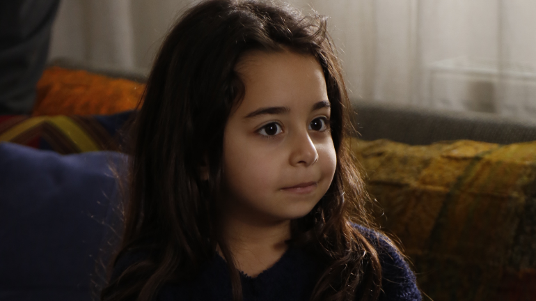

melek
A personagem: Melek tem sete anos de idade. Ela sofre maus-tratos e abusos da própria mãe biológica (Şule) e do padrasto (Cengiz).
Um site para falar sobre minha série

A famosa produção turca Mãe (Anne), que conquistou o público no Brasil na TV e no streaming, conta a emocionante história de Zeynep (Cansu Dere), uma jovem fotógrafa que assume temporariamente o cargo de professora substituta.
A série turca "Mãe" (Anne) conta a história de Zeynep, uma professora substituta solitária, e Melek, uma garotinha de sete anos que sofre graves maus-tratos em casa por parte da mãe biológica e do padrasto.

A personagem: Melek tem sete anos de idade. Ela sofre maus-tratos e abusos da própria mãe biológica (Şule) e do padrasto (Cengiz).
 zeynep Güneş
zeynep Güneş
Zeynep Güneş é a protagonista da aclamada série dramática turca Mãe (Anne, 2016-2017), adaptada do original japonês Mother. Na trama, ela é interpretada pela famosa atriz turca Cansu Dere.
 sule akçay
sule akçay
A personagem Şule Akçay é a mãe biológica da pequena Melek (interpretada por Beren Gökyildiz) na aclamada série e novela dramática turca Mãe (Anne), adaptada da original japonesa Mother.
| temporada | ano | Episódios |
|---|---|---|
| 1 | 2016 | 33 |
Origem japonesa: A história original nasceu no Japão em 2010 com o drama Mother, mas foi a versão turca de 2016 que conquistou o mundo todo com seu enredo forte.
Temática pesada: Por tocar em um assunto sensível como o abuso infantil e a negligência, a produção exigiu um cuidado psicológico imenso com a pequena atriz nos bastidores, garantindo um ambiente seguro e lúdico nas pausas das gravações difíceis.
Clique no botao para saber mais sobre a serie
Globoplay